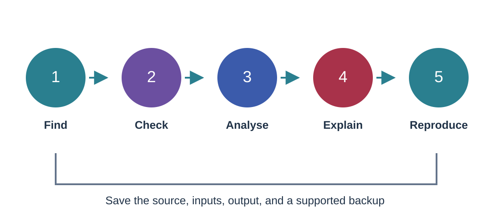
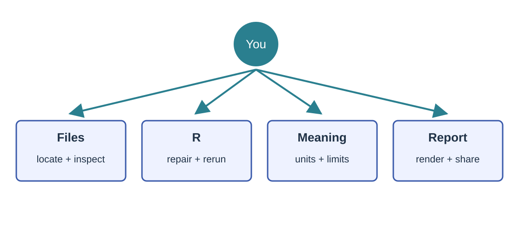
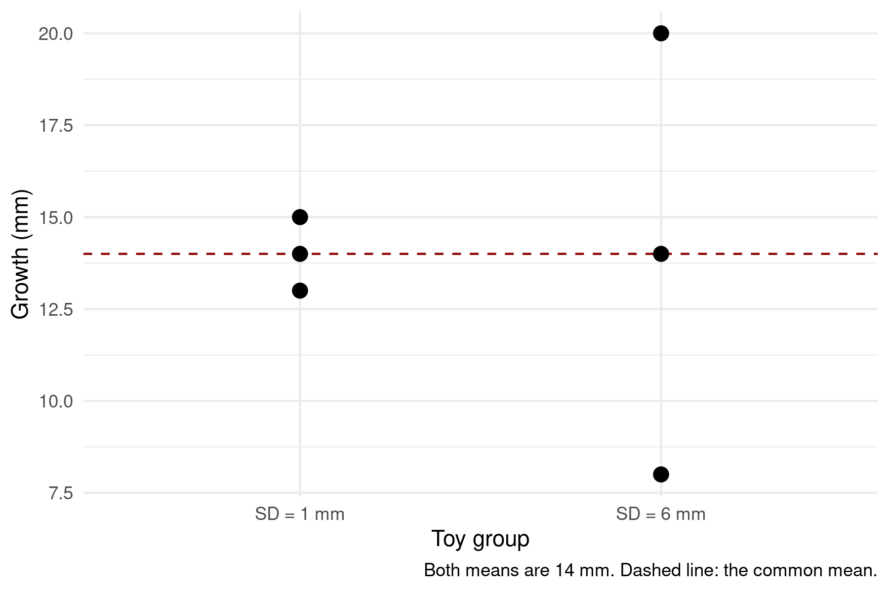
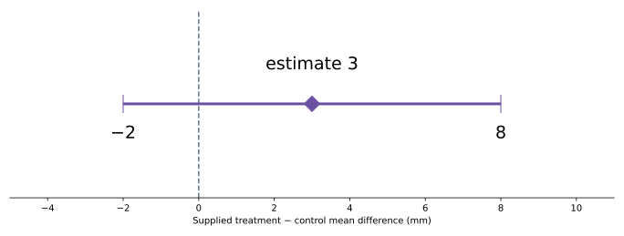
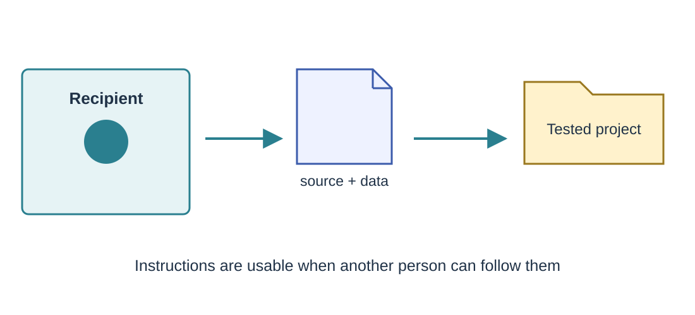

Next year a lab teacher or thesis supervisor will hand you a spreadsheet and ask: “Can you make a figure and tell me whether the treatment did anything?” Nobody will list the steps for you. Today you practise doing the whole job on familiar data, using your notes and the reference pages.
Today you will:
run the complete workflow again: find, check, analyse, explain, reproduce;
repair a broken analysis and explain results in plain words;
investigate an unusually high value without deleting it;
leave with a project, a report and a checklist you can reuse.
This is the last day of the course. No new method: only practice with what you already know.
The workflow you can reuse

Five steps in order: find, check, analyse, explain and reproduce, with the source, inputs, output and a backup saved throughout.
Find the data and the project folder without “recent files”. Check rows, units, missing values and the independent unit.
Analyse with a plot of individual units first. Explain size, spread or uncertainty, and a limitation.
Reproduce: restart, render, and back up.
Practice stations: start where you are weakest
Files: download, unzip, find and inspect files in the terminal.
R: repair a broken analysis and rerun it.
Meaning: explain units, spread, uncertainty and limits.
Report: render your Day 23 report from a fresh session.
Remote: log in and transfer a file, if the service is available. Otherwise note it as still to do.

Practice branches into four stations: files (locate and inspect), R (repair and rerun), meaning (units and limits) and report (render and share).
Repair a broken analysis: read the errors
This code should give the mean growth of the seedlings. In a fresh R session it fails:
> seedling <- read_csv("seedlings.csv")
Error in read_csv("seedlings.csv") : could not find function "read_csv"
> library(readr)
> seedling <- read_csv("seedlings.csv")
Error in (function (path, write = FALSE, call = caller_env()) :
'seedlings.csv' does not exist in current working directory: ...
> seedling <- read_csv("data/seedlings.csv", show_col_types = FALSE)
> seedlings <- mutate(seedlings, growth_mm = final_mm + initial_mm)
Error in mutate(seedlings, growth_mm = final_mm + initial_mm) :
could not find function "mutate"
> library(dplyr)
> seedlings <- mutate(seedlings, growth_mm = final_mm + initial_mm)
Error : object 'seedlings' not found
could not find function: the package is not loaded; add library().
does not exist in current working directory: wrong path; the file is in data/.
object not found: a name typed differently: seedling was created, seedlings was used.
Code that runs can still be wrong
> seedlings <- mutate(seedling, growth_mm = final_mm + initial_mm)
> mean(seedlings$Growth_mm)
[1] NA
Warning messages:
1: Unknown or uninitialised column: `Growth_mm`.
2: In mean.default(seedlings$Growth_mm) :
argument is not numeric or logical: returning NA
> mean(seedlings$growth_mm)
[1] 63.325
> seedlings <- mutate(seedling, growth_mm = final_mm - initial_mm)
> seedlings$growth_mm[1]
[1] 18.6
> mean(seedlings$growth_mm)
[1] 18.38333
Growth_mm with a capital G is a different name, so R warns and returns NA.
With +, R calculates without complaint: 63.3 mm “growth” for seedlings about 20–45 mm long. Nonsense, but no error.
Check one plant by hand. P01: 44.3 − 25.7 = 18.6 mm. With - the first value matches; mean growth is 18.38 mm.
Explain before calculating: spread and units
Two groups can share a mean and still differ in spread: both have mean 14 mm, SD 1 and 6 mm.
A larger SD is not automatically bad technique; organisms vary.
One plant with 100 cells measured is still one independent plant.
A missing value is not zero: zero invents a measurement.

Two toy groups with the same mean but very different spreads of individual values.
Explain before calculating: uncertainty and range
Estimate 3 mm, 95% interval −2 to 8 mm. Does that show no effect?
No. The interval includes zero and effects in both directions: the study cannot tell. Report the uncertainty.
A reading above the highest calibration standard: flag it, dilute, measure again.
A positive leaf-area slope: an association, not proof that changing area changes mass.

An estimated difference of 3 mm with a 95 percent interval from −2 to 8 mm that spans zero.
Without A11 (a separate object; the data file is untouched): 33.92 − 26.97 = 6.95 mg. Only the reference mean changes, and the reference group drops from 12 to 11 cultures.
Report the primary result. Label the second “A11 omitted without evidence of error”.
Three different issues: A19 missing, A11 high but recorded, and a small simulated study.
Hand the work over and test it
Write instructions a stranger could follow:
the question, and what one row means;
where the raw data are, what blank cells mean;
which report to render, and what it should show.
Then test them: extract the project into a new folder, follow your own instructions, and fix anything unclear.

A recipient uses the source and data to reach a tested project, without needing the author’s memory.
Questions for your next lab
Ask these before analysing any new dataset:
What does one row represent, and what was independently assigned?
What are the units, and what do blank cells mean?
Which figure shows the individual observations and answers the question?
Where are the raw data, the source, the output and the backup?
Write them, with your workflow, in reports/next-lab.txt.
Summary
The workflow is the same for every dataset: find, check, analyse, explain, reproduce.
Check one row by hand: code can run and still compute the wrong biology.
Missing is not zero; high is not automatically wrong; keep the primary result and label any sensitivity check.
An interval that includes zero means “uncertain”, not “no effect”.
A report is finished when someone else can render it from a fresh copy and understand it.
After this course: use this project and reports/next-lab.txt in your later lab courses and thesis work. Start every new dataset with the questions on the previous slide.
Now:open the Day 25 exercises. Leave with your primary report, the labelled A11 check, reports/final-investigation.txt, a tested handover, reports/next-lab.txt and reports/readiness-review.txt.